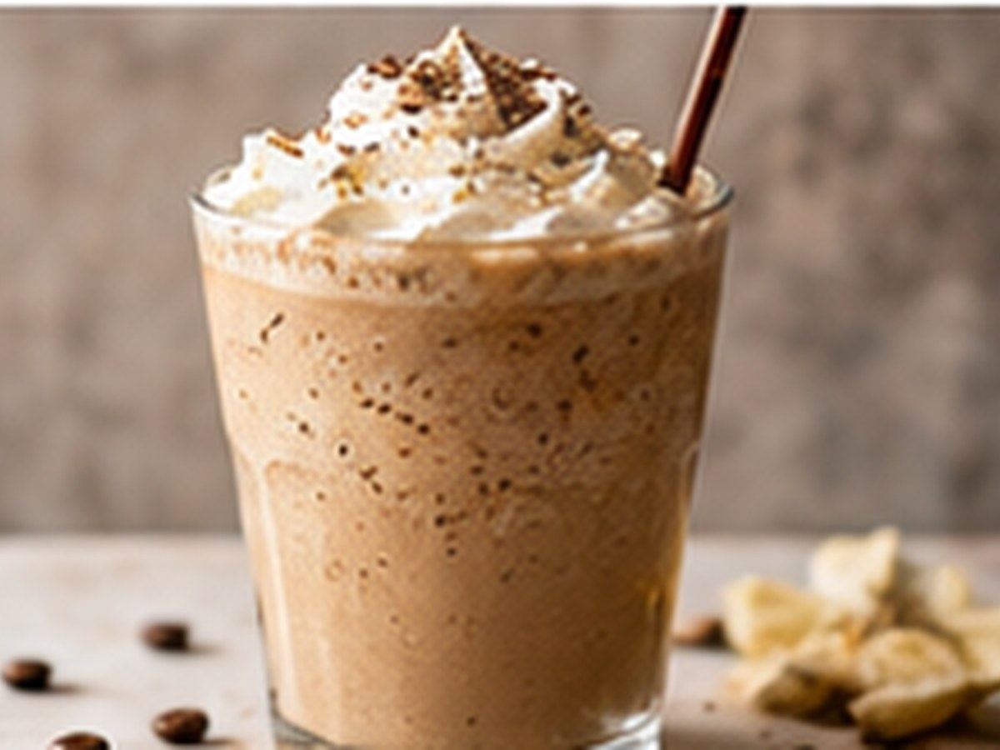

✨ KI-generiertes Bild Kaffee & DessertKaffee & Dessert
Coffee Frappé
Cremig-eisig gemixt.
⏱5 Min.
📶Einfach
☕1 Portion
🫘Zutaten
- Kaffee, stark1 Tasse
- Eiswürfelnach Bedarf
- Milch100 ml
- Zucker/Sirupoptional
📋Zubereitung
- 1Kaffee, Eis und Milch in einen Mixer geben.
- 2Kräftig mixen, bis eine schaumige Konsistenz entsteht.
- 3In ein Glas füllen und sofort servieren.
💡
Kaffee für dieses Rezept entdeckenLeNoKo Shop
→
Kaffee-Tipp
Der kräftige Peru Signature hält sich auch im Mixer gut durch.